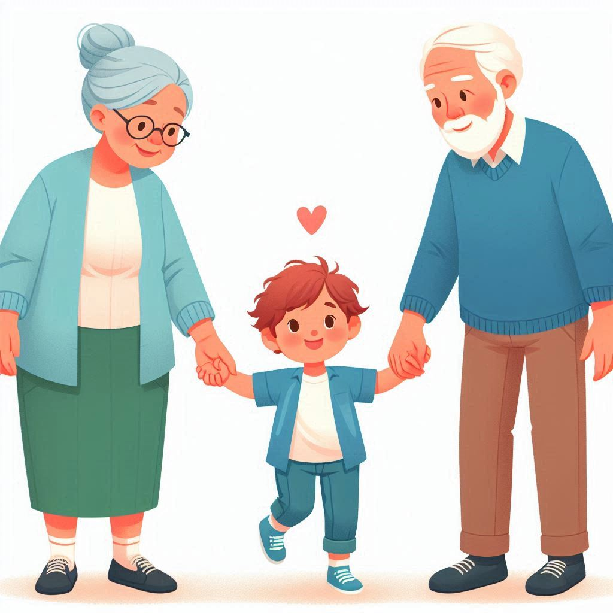

작가
이희영
출판일
2019년
감상평에 대한 AI그림
소설의 배경은 정부에서 운영하는 양육 공동 시설인 NC센터이다. 아이들은 자신들의 부모가 될 사람들을 직접 면접을 통해 결정한다. 주인공 제누와 젊은 부부 하나와 해오름의 대화를 읽는 것이 재미있었다. 세 사람은 말도 잘 통하고 서로 호감을 느꼈지만 결국 3차 페인트를 끝으로 마지막 관문인 합숙을 하지 않겠다고 통보한 제누가 인상적이었다. 좋은 부모와 좋은 관계에 대해 생각해보게 되는 소설이다.

감상평에 대한 AI평가
NC센터에서 아이들이 부모를 면접하는 설정과 제누와 젊은 부부, 해오름의 대화가 흥미롭게 느껴집니다. 세 사람의 말이 잘 통하고 서로 호감을 느끼는 부분에서 나타나는 긍정적인 감정들입니다. 제누가 마지막 관문인 합숙을 하지 않겠다고 통보한 부분에서 독자가 느낀 충격과 인상 깊음이 드러납니다. 좋은 부모와 좋은 관계에 대해 생각해보게 되는 부분에서 느껴지는 철학적인 고찰과 깊은 생각이 나타납니다. 이 감상평은 독자가 이야기 속에서 느낀 복합적인 감정들과 깊은 인상을 잘 표현하고 있습니다. 소설의 독특한 설정과 인물 간의 상호작용이 독자에게 큰 영향을 미쳤음을 알 수 있습니다.